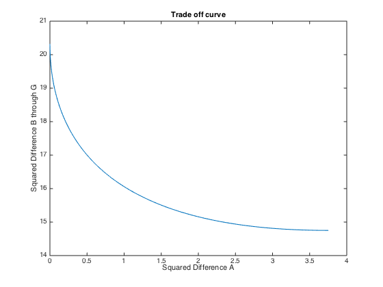

Contents
Given Code
clear;
A = [
5 2 1 0
1 1 2 3
0 1 2 4
0 3 3 1
3 2 1 1
2 0 3 1
1 3 0 2];
y = [20; 5; 3; 4; 10; 5; 5];
Part A
a = A(1,:)';
Ahat = [2*A'*A a; a' 0];
yhat = [2*A'*y; 20];
xlambda = Ahat\yhat;
x = xlambda(1:4,1)
res = norm(A*x - y)^2;
['The residual value using this A is ' num2str(res)]
A*x
x =
3.6084
0.9771
0.0039
0.0702
ans =
The residual value using this A is 20.2687
ans =
20.0000
4.8039
1.2657
3.0133
12.8535
7.2986
6.6801
Part B
i = 1;
B = A(:,1:3);
i=1;
for mu = 0:0.01:1000
mu;
Bhat = [B; sqrt(mu)*B(1,:)];
yhat = [y;sqrt(mu)*20];
m = (Bhat'*Bhat)\Bhat'*yhat;
stdBGtemp(i) = norm( B*m - y)^2;
stdAtemp(i) = norm(B(1,:)*m - 20)^2;
i = i+1;
end
figure;
plot(stdAtemp, stdBGtemp);
xlabel('Squared Difference A');
ylabel('Squared Difference B through G');
title('Trade off curve');
